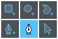

Edit Canvas Tools
On the Edit Canvas, there are two groups of tools, the Edit Tools, and the View Controls.
In the upper left hand corner, there are the Edit Tools.
In the upper right hand corner are the View Controls.
Edit Tools

There are two rows of Edit Tools, three 'New Shape' tools for creating shapes,
and three 'Edit' tools for editing them.
-
New Rectangle -
Click and drag to create a new rectangular shape. The shape's four points will be of the
type 'corner' and will have their handles hidden.
-
New Oval -
Click and drag to create a new oval shape. The shapes four points will be of type 'symmetric'.
-
New Path -
Click multiple times on the canvas to create a new path with straight sides.
Each time you click, a new point will appear on the canvas.
The points will have hidden handles, and will be of type 'flat'.
If you click and drag, a new point of type 'symmetric' will be placed where the original click
was placed, and a handle will be created wherever the mouse is dragged and the mouse button
is released.
Clicking on the first point, or clicking the 'done editing path' button, will close the path
and create a new shape.
-
Add Path Point Pen Tool -
On an existing path, move the Add Path Point pen tool over the path's edge. Clicking on the
path will add a new point at that location, without changing the curve of the path. The new
point will be of type 'flat'.
If you click an empty space with the Add Path Point pen tool, the selected tool will automatically
switch to the New Path tool.
-
Path Edit Pen Tool -
Clicking in an empty space will de-select a shape, and clicking on a shape will select that
shape.
Once a shape is selected, clicking on a Path Point will select that Path Point, which will
also show it's Handles.
Clicking and dragging a Path Point or Handle will change it's location.
-
Shape Edit Arrow Tool -
Clicking in an empty space will de-select a shape, and clicking on a shape will select that
shape.
Clicking and dragging a selected shape will change that shape's location. A bounding box
will also be shown around the selected shape, allowing for changes in width or height.
View Controls

There are seven view controls, from left to right they are:
-
Pan Tool -
Toggle this to drag the canvas up/down/left/right.
Keyboard Shortcut: Spacebar
-
Zoom 1:1 -
Sets the Zoom level where 1 Pixel = 1 Em Unit.
-
Zoom Fit to Screen -
Re-sets the zoom level and pans so that the entire glyph can be seen.
Keyboard Shortcut: Ctrl+0
-
Zoom Level -
Displays the current zoom level as a percentage. Enter a new integer here from 1-100 to re-set
the zoom level.
-
Zoom In / Zoom Out -
The plus(+) / minus(-) buttons will increase or decrease the size of the Edit Canvas.
Keyboard Shortcut: Ctrl+ or Ctrl-
-
Dual Screen Mode -
The Edit Canvas can be torn out into its own window, and all the Panels are laid out
side-by-side in the original window.